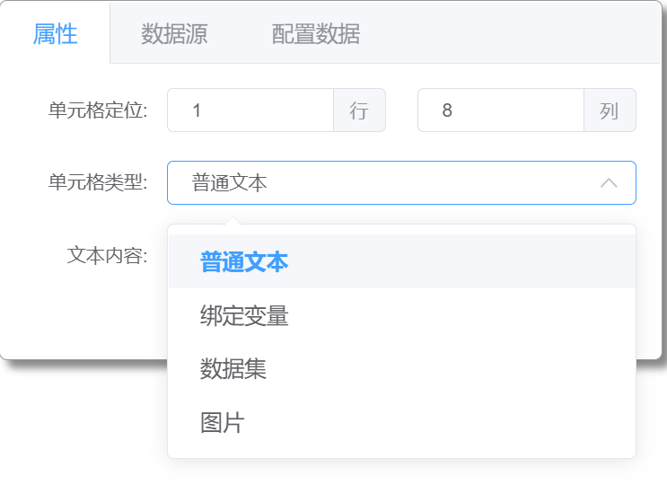
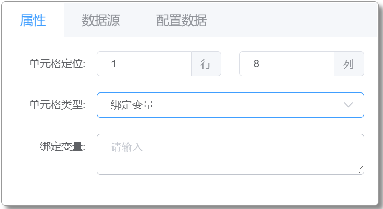
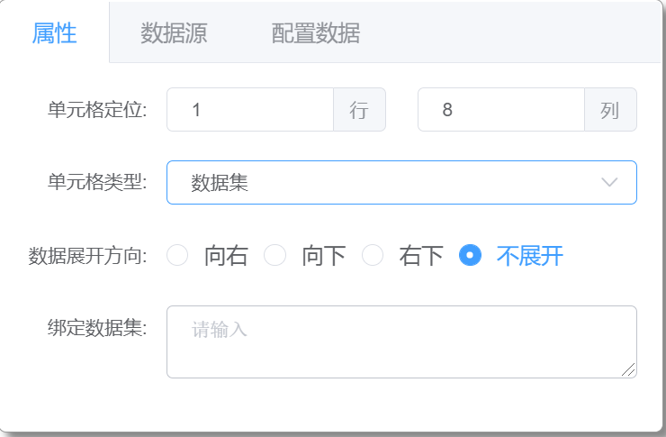
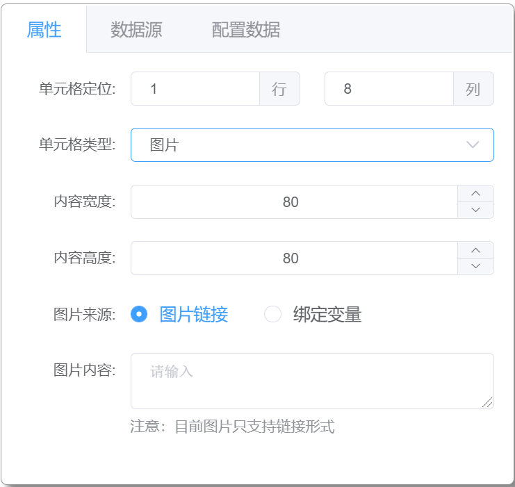

单元格属性设置
单元格属性类型
单元格属性设置，根据单元格不同属性类型的选择进行相对应的属性设置，属性类型包括：普通文本、绑定变量、数据集、图片

普通文本
选中单元格设置静态文本。
绑定变量

选中单元格设置绑定数据变量，与报表渲染数据 sourceData 中数据变量双向绑定。
数据集

选中单元格设置绑定数据集变量，与报表渲染数据 sourceData 中数据变量双向绑定。
可设置数据展开方式：向右、向下、右下、不展开
向右、向下展开数据结构为一维数组，右下展开为二维数据
图片

选中单元格设置显示图片，同时可对图片的宽、高进行设置。
图片来源支持图片链接和绑定变量(链接形式)。